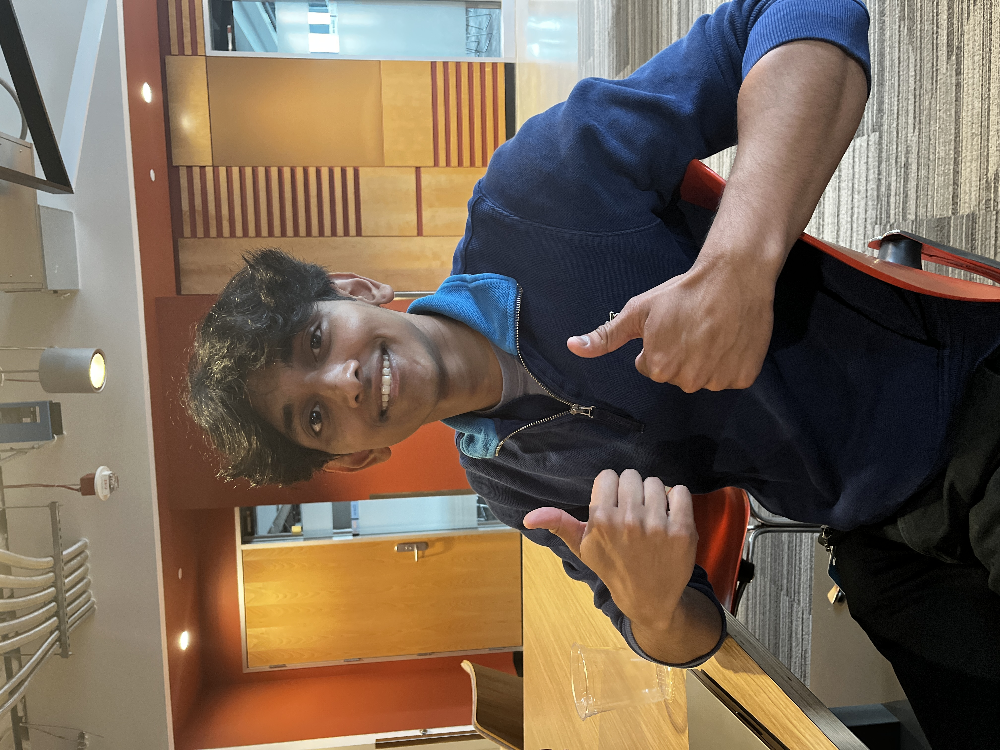

|
Madhavan Iyengar
Hi! My name's Madhavan, I'm a first year MS Robotics student at Carnegie Mellon University.
I am currently working with Prof. David Held on robot learning from human demonstrations.
During my undergrad, I was fortunate to work with Prof. Nima Fazeli and Prof. Joyce Chai.
I also interned as a software developer at Amazon in the Alexa Smart Home org, where I helped launch the Echo Hub.
Email /
Twitter /
LinkedIn
|

|
Research
I'm interested in how we can frame robot learning tasks such that they can actually reap the benefits of scaling data and compute.
Currently I'm looking into how we can use visual features from human videos to jump-start models for robot manipulation.
During my undergrad, I worked on sim2real, tactile sensing, and 3D-LLMs.
|
|
|
Built Different: Tactile Perception to Overcome Cross-Embodiment Capability Differences in Collaborative Manipulation
William van den Bogert*, Madhavan Iyengar*, Nima Fazeli
ICRA 2026
project page /
arXiv
We present an approach that uses tactile sensors to transfer policies between robots that have vastly different sensing capabilities. We show how our method can enable a cooperative task where a robot and human must work together to maneuver objects through space.
|
|
|
3D-GRAND: A Million-Scale Dataset for 3D-LLMs with Better Grounding and Less Hallucination
Jianing Yang, Xuweiyi Chen, Nikhil Madaan, Madhavan Iyengar, Shengyi Qian, David F. Fouhey, Joyce Chai
CVPR 2025
project page /
arXiv
We address the lack of large-scale datasets that provide dense grounding between language and 3D scenes by introducing 3D-GRAND, a dataset comprising of 40,087 household scenes paired with 6.2 million densely-grounded scene-language instructions.
|
|
|
LLM-Grounder: Open-Vocabulary 3D Visual Grounding with Large Language Model as an Agent
Jianing Yang, Xuweiyi Chen, Shengyi Qian, Nikhil Madaan, Madhavan Iyengar, David F. Fouhey, Joyce Chai
ICRA 2024
project page /
arXiv
We present the first method capable of localizing novel objects in 3D scenes using Neural Radiance Field (NeRF) and Large Language Models (LLMs) through iterative, natural language-based interactions.
|
Before I got into AI, I was interested in mathematical modeling of disease spread.
|
|
Front propagation in a spatial system of weakly interacting networks
Evgeniy Khain, Madhavan Iyengar
Physical Review E, 2023
We address the propagation of an epidemic through a metapopulation model, highlighting the impact of migration and node degree distribution on the spread.
|
|
|
Epidemic on a changing network: College outbreaks and vaccination
Madhavan Iyengar, Varun Nimmagadda, Evgeniy Khain
International Journal of Modern Physics C, 2022
We explore the dynamics of disease outbreaks on college campuses, modeling interactions between extroverts and introverts. We also examine vaccination strategies, considering prioritization based on risk or contact rates to mitigate an outbreak.
|
|